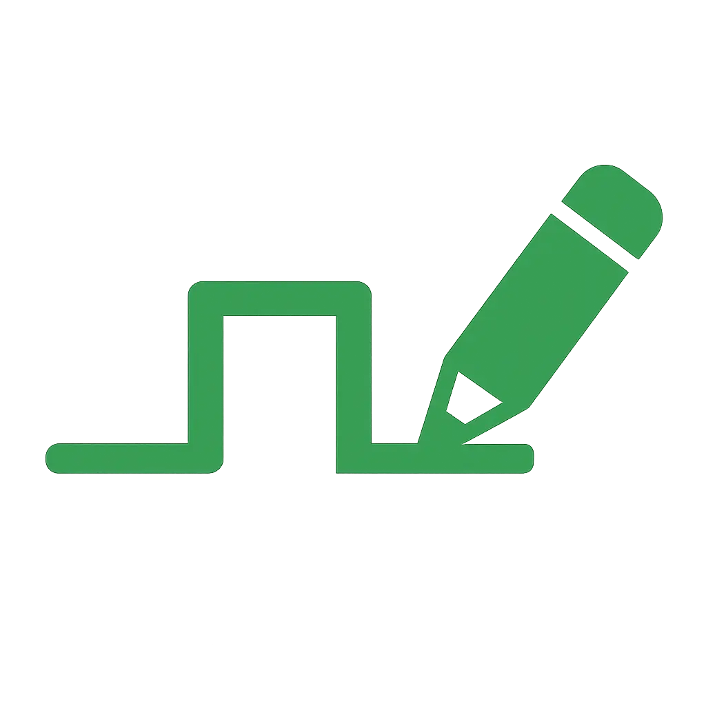

文件
新建
打开
载入示例
另存为
复制分享链接
导入为
WaveDrom JSON...
VCD（值变化转储）...
导出为
图片
PNG
SVG
JPG
WaveDrom JSON...
VCD（值变化转储）...
TXT（制表符分隔）...
CSV（电子表格）...
编辑
清除所有信号
视图
主题
时间轴
隐藏轴数字
WaveDrom
显示代码
调试面板
VCD 信号面板
帮助
教程
联系
|
|
|
位信号
矢量信号
预定义信号 ▶
时钟
计数器
复位
脉冲
选通/使能
PWM
斜坡
走查1
走查0
总线空闲
交替
格雷码计数器
空白行
|
▼
高电平 (1)
1
低电平 (0)
0
高阻 (z)
Z
未定义 (x)
X
上拉 (u)
U
下拉 (d)
D
|
|
|
|
|
步数:
子步数:
WaveDrom 代码（实时编辑）
✓ 有效
📋 复制
🔗 在编辑器中打开
✕
{ signal: [] }
实时预览
对话框
✕
`n